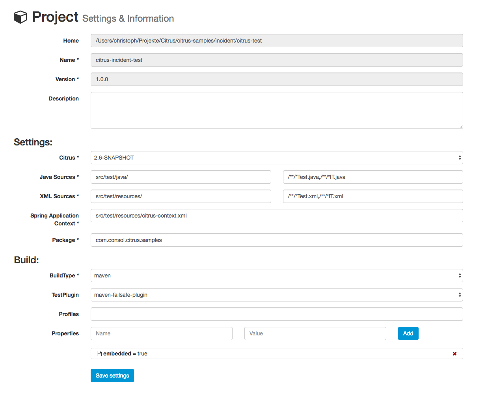

Project settings
Each Citrus project has properties and settings that influence the administration UI. These properties are project names, descriptions, versions and source folders. You can review and change these project related settings with an HTML form on the project settings page.

Some project settings are read only at the moment, e.g. we do not support renaming of projects yet. If you want to rename a project or change the project version you need to do this manually in the Maven POM configuration.
If you save the project settings the administration UI will save the changes to the project settings file citrus-project.json which is located in your project home directory. This file uses the JSON syntax and looks like follows:
{
"projectHome" : "~/Projects/Citrus/citrus-sample",
"name" : "citrus-sample-project",
"description" : "",
"version" : "1.0.0",
"settings" : {
"basePackage" : "com.consol.citrus",
"citrusVersion" : "2.6",
"springApplicationContext" : "src/it/resources/citrus-context.xml",
"javaSrcDirectory" : "src/test/java/",
"xmlSrcDirectory" : "src/test/resources/",
"javaFilePattern" : "/**/*Test.java,/**/*IT.java",
"xmlFilePattern" : "/**/*Test.xml,/**/*IT.xml",
"useConnector" : true,
"build" : {
"@class" : "com.consol.citrus.admin.model.build.maven.MavenBuildConfiguration",
"type" : "maven",
"properties" : [ ],
"testPlugin" : "maven-failsafe-plugin",
"profiles" : null
}
}
}
General settings
Each Citrus project works with Java classes and resources. These files are located in project folders inside the Maven project. Citrus admin is working with these defaults:
- src/test/java/ folder for Java test classes
- src/test/resources/ folder for test resources (e.g. configuration files)
- /**/*Test.java,/**/*IT.java file pattern for Java test classes
- /**/*Test.xml,/**/*IT.xml file pattern for XML test cases
You can customize these settings according to your project setup.
Build configuration
The administration web UI is able to execute tests. This test execution is done by calling the Maven build lifecylce for the opened project. You can adjust the build settings accordingly. By default Citrus admin uses the maven-failsafe-plugin to execute the Citrus tests. This causes Citrus to call
> mvn failsafe:integration-test
This executes all Citrus test cases. You can change this to maven-surefire-plugin so the Maven command looks like this:
> mvn test
In case you need to activate Maven profiles during the build you need to add those profiles to the build settings. Each profile name that you save to the build settings will result in some command line argument for the Maven build like this:
> mvn failsafe:integration-test -PmyProfile
Also when some system properties should be set during the Maven build you can add those properties to the build settings, too. This results in command line arguments for the Maven command:
> mvn failsafe:integration-test -DmyProperty=value
This is how to customize the Maven build that executes the Citrus tests in a project.